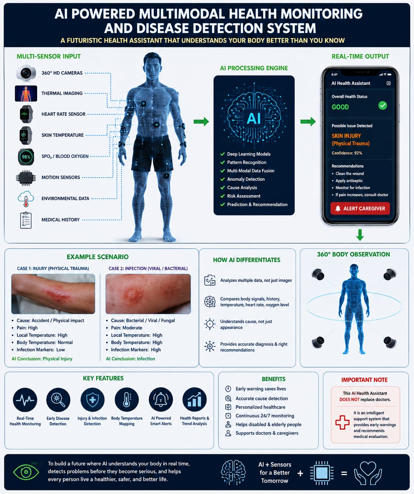

Non-invasive wearable intelligence
AI communication for people who cannot speak.
CareSignal AI interprets heart rhythm, movement, temperature, skin response, muscle activity, and optional EEG signals to express pain, stress, fatigue, comfort, and basic needs in simple language.
Live Assistive Output
CareSignal
8:41
Current Message
I feel stressed.
Confidence 87% from HRV, GSR, motion, and skin temperature fusion.
Heart Rate
104 bpm
Stress
82%
Pain
48%
Mission
Restoring dignity through readable body signals.
To create the world's most advanced non-invasive AI communication platform that empowers people with severe physical disabilities to express emotions, pain, stress, comfort, and basic communication needs through wearable technology and personalized artificial intelligence.
System Concept
Multi-sensor input, AI processing, caregiver-ready output.
The platform focuses on scientifically supported physiological interpretation rather than direct thought reading. It turns complex sensor streams into clear messages family members, caregivers, and clinicians can act on quickly.

Research Methodology
Six phases from controlled study to personalized daily use.
Participant Recruitment
Group A recruits 100 healthy individuals for baseline physiological data. Group B recruits 100 people with paralysis, ALS, stroke, cerebral palsy, locked-in syndrome, or severe speech impairment.
Wearable Sensor Data
Smartwatches, rings, and headbands collect HR, HRV, SpO2, skin temperature, GSR, motion, EMG, and optional EEG for secure AI analysis.
Standardized Testing
Participants complete emotional, physical, cognitive, and communication tests. Ratings like pain 8/10 or stress 6/10 become ground truth labels.
AI Model Training
Machine learning connects signal combinations with stress, pain, relaxation, anxiety, fatigue, and other user states using thousands of examples.
Personal Calibration
Each new user completes several days of calibration so the model learns their unique body patterns and improves prediction accuracy.
Continuous Learning
The AI keeps adapting during daily use, becoming more accurate as caregivers confirm or correct predicted needs and emotional states.
AI Agent
CareSignal Agent converts biosignals into human messages.
Adjust the simulated wearable readings and run an analysis. The upgraded medical agent combines biosignal patterns, symptom keywords, red-flag screening, and caregiver guidance to explain what may need attention.
Wearable Input
Calibrated profileAgent Output
Confidence 87%
Stress
Pain
Fatigue
Relaxation
Agent: Monitoring wearable stream and caregiver confirmations.
Medical Knowledge Agent
Ask a medically aware caregiver assistant.
This assistant supports caregiver decisions and education. It does not diagnose, prescribe treatment, or replace emergency care or a licensed clinician.
Medical Agent Response
Enter symptoms or use a quick chip, then ask the agent for a caregiver-focused explanation.
Expected Performance
Designed around realistic scientific limits.
Direct thought reading without an implanted brain interface is not currently supported by scientific evidence. CareSignal AI focuses on interpreting physiological signals and personalized patterns.
Future Development
A non-invasive ecosystem for personalized health AI.
Artificial Intelligence
Machine Learning
Deep Learning
Biomedical Signal Processing
Wearable Biosensors
Edge Computing
Cloud Computing
Internet of Things
Bluetooth Low Energy
Mobile Applications
Smart Glasses
AI Language Models